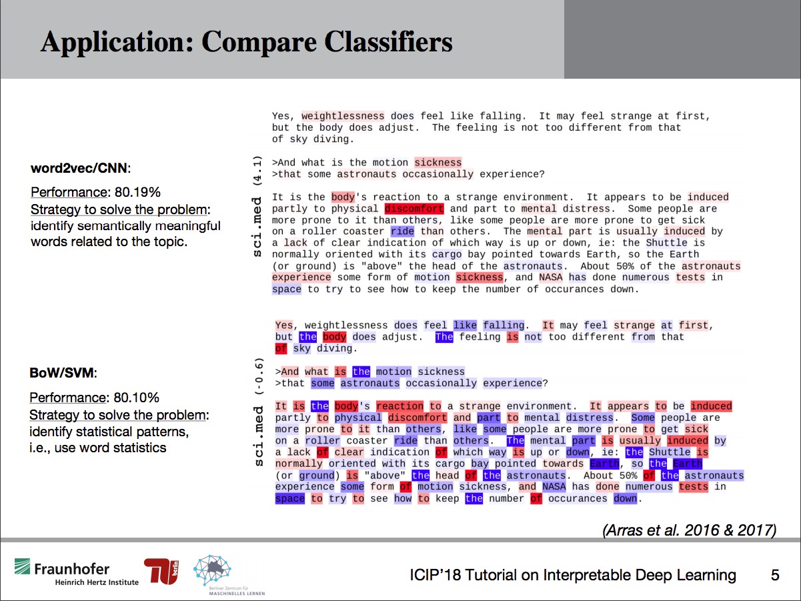
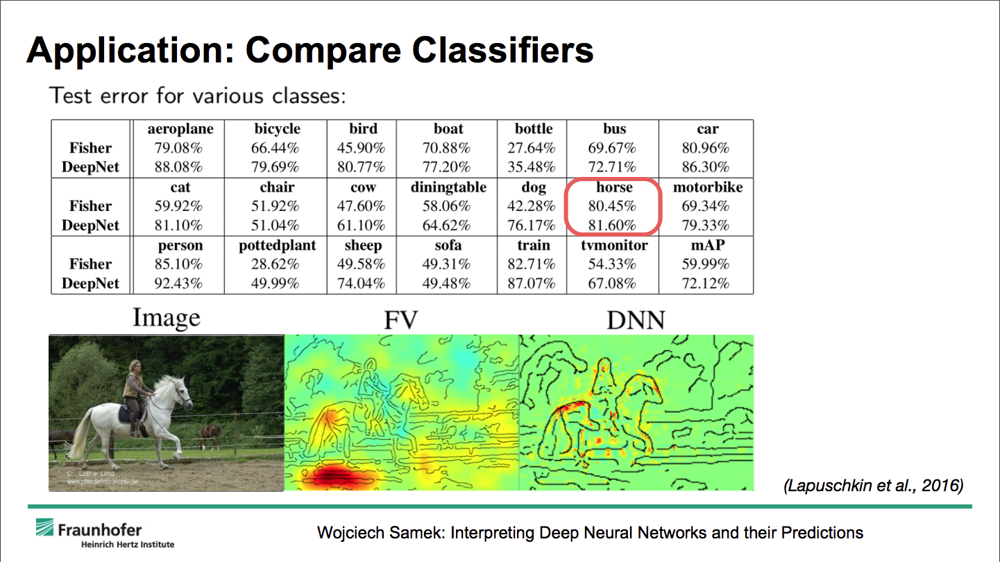
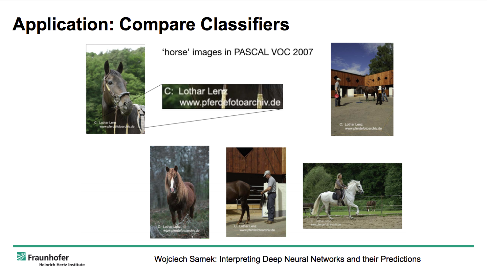
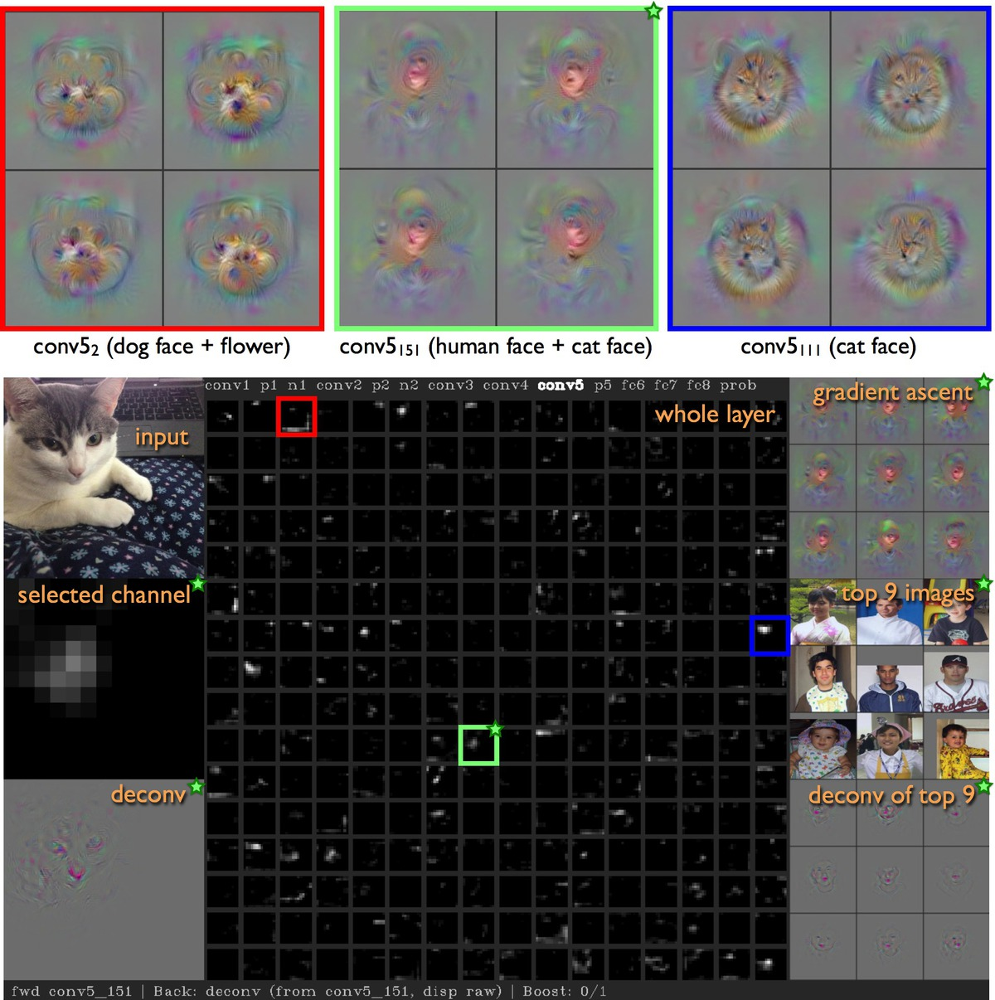

Deep Learning - Week 5
Course starts soon..
QUESTIONS
Do you have any question?
Questions can be about anything:
course, exercise, website, problems, tools..
PROJECTS
HACKATHON
5-6 JuneSurf Spot Forecast
with Windfinder
Meta Data Extraction
with EconStor
Bakery Prediction
with Meteolytix
Add your own challenge
You are free to add you challenge, you just need:CORONA VIRUS
Datasets: 1 , 2, 3, 4, 5, 6, 7 and more available on KaggleFake News
Dataset available on KaggleImage Classification
Natural Scene or Bird Species classificationCredit Card Fraud Detection
Dataset on KaggleBook Analysis and Recommendation
Dataset on KaggleProject from you
Please explain again your project and your team.PAPER OF THE WEEK
An analysis of single-layer networks in unsupervised feature learning,QUIZ (15 mins)
1. What is the difference between parameters and hyperparameters? Can you make some examples? Is there a hyperparameter that is more important than the others?
2. What is the difference between FFNN, CNN, RNN and LSTM?
Which one would you use for processing 1) audio signals? 2) text classification? 3) text prediction? 4) video processing? 5) extracting caption from images?
3. How accurate can we know what the neural network is doing? Can we know what each level in the network is doing? Why all examples are explained with images?
DISCUSSION AND ANSWERS
Compare text classifiers
Compare image classifiers
Not always as expected..
Deep Visualization Toolbox
Image from the website. Here also the source code of the Toolbox
EXERCISE (15-20 mins)
We go through the programming assignment that were planned for this week.
1. What is np.random.seed(1) ?
2. Why are using for loop, after talking about vectorization? How would you vectorize the implementation?
3. How can a neural network perform worse on training data and better on test data? What is the importance of training performances then?
For the next week